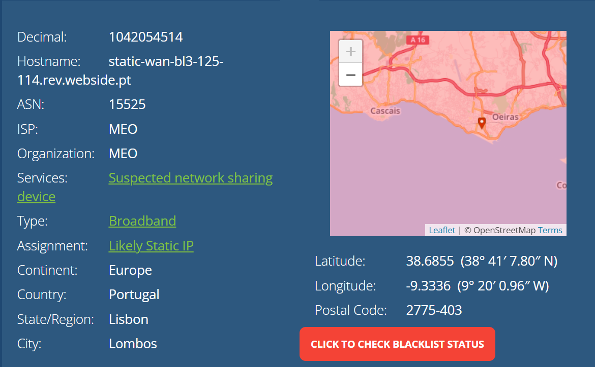
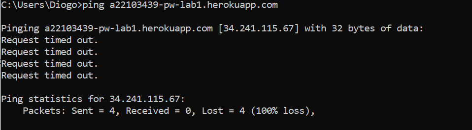
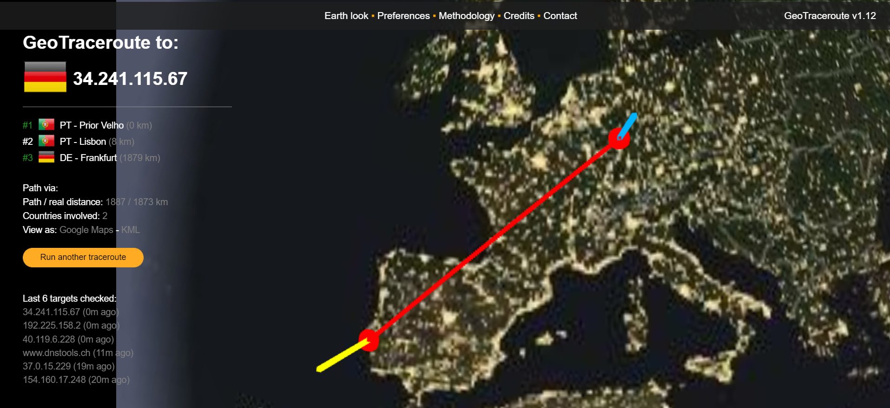
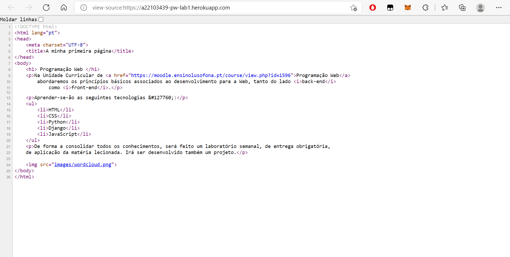
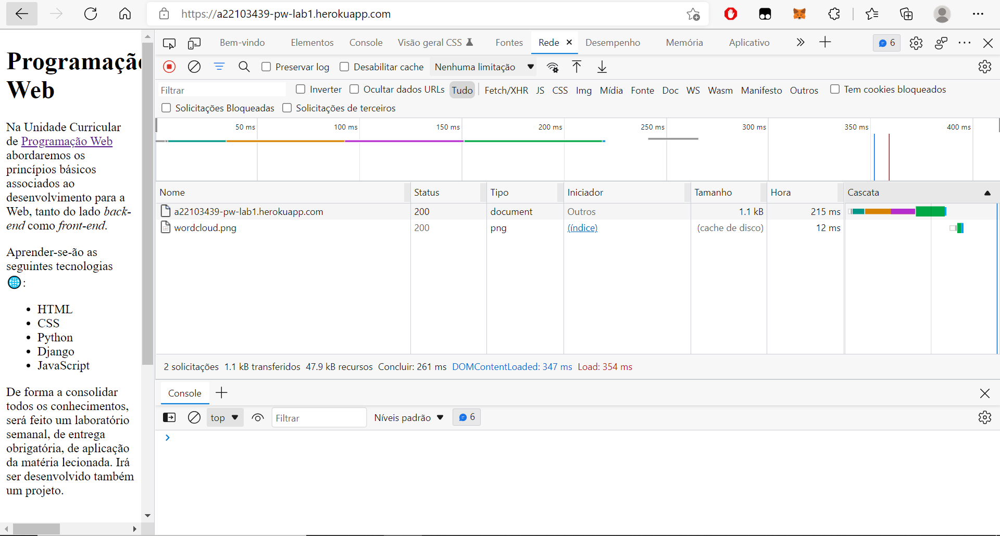

Programação Web
A Internet e a Web
Home
A Internet e a Web
Conhecer a Internet
Endereços IP:
IP do PC: 193.137.75.180

Percurso:
Depois de fazer o ping via command line podemos ver a seguinte informação:

Usando a ferramenta GeoTraceroute:

Acesso via HTTP à minha página Web
HTTP:
código fonte:

Inspect:
browser developer tool
- barra rede:

- ficheiros:
- tipo de ficheiros, timings de espera e de descargarespectivamente em seguida: